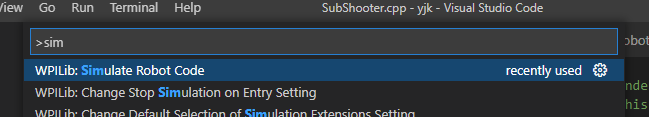
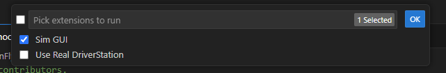
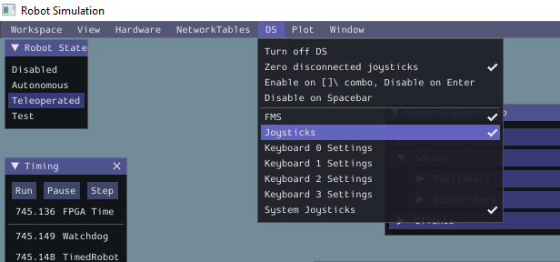
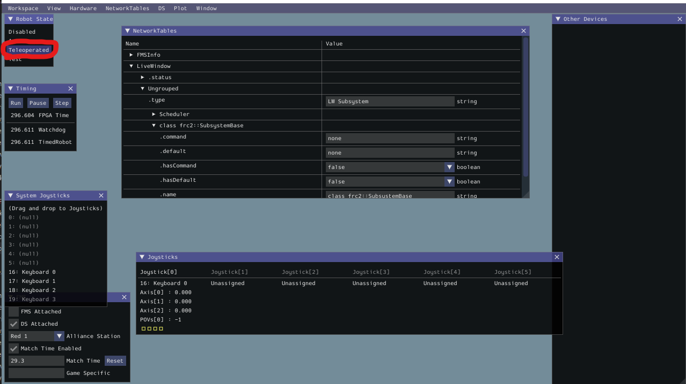
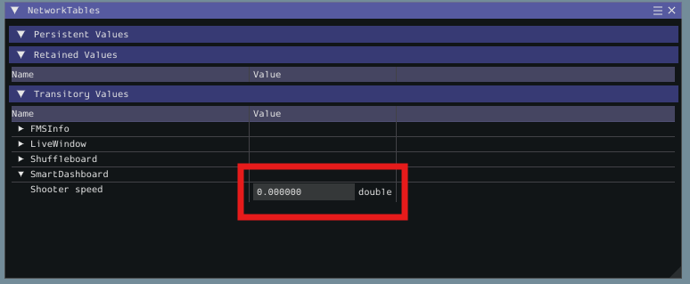
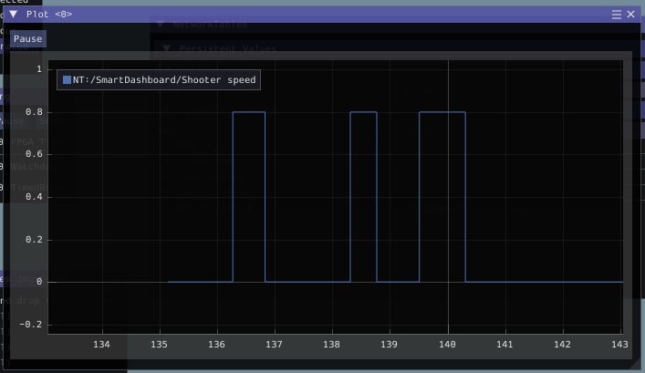

Testing in simulation
You'll run your robot code in the Simulation GUI and watch the shooter's speed change when you press a button. Your first working robot behaviour!
The code so far is enough to run on a real robot. But there's one thing we should add so we can see the shooter doing something in simulation: report its speed to the dashboard.
Send the speed to the dashboard
In SubShooter.cpp, include SmartDashboard and add a line to the Periodic() function:
#include "subsystems/SubShooter.h"
#include <frc/smartdashboard/SmartDashboard.h>
SubShooter::SubShooter() = default;
// This method will be called once per scheduler run
void SubShooter::Periodic() {
frc::SmartDashboard::PutNumber("shooter speed", _shooterMotor.Get());
}
SmartDashboard lets our robot send information back to a dashboard a human can see. Here we put a number on the dashboard labelled "shooter speed", equal to _shooterMotor.Get().
.Get() returns how much power is being sent to the motor, from 0.0 (still) to 1.0 (full power). So at 80% power it reports 0.8.
frc::SmartDashboard::PutNumber("shooter speed", _shooterMotor.Get());
// If the motor were at 50%, this line would effectively be:
frc::SmartDashboard::PutNumber("shooter speed", 0.5);
A subsystem's Periodic() function is called automatically about 50 times a second. Putting the speed there means the dashboard stays up to date as the real value changes.
Run the simulator
- Open the command palette: Ctrl + Shift + P.
- Run WPILib: Simulate Robot Code.
- When asked, tick Sim GUI and OK.


Check here for an overview of the simulator, you will need to follow the Using keyboard as joystick section of that tutorial if you don't have an xbox controller at home, or the Adding a System Joystick to Joysticks section if you do.
If you can't find a window or section mentioned in the instructions, you may need to add it from the title bar. For example, you will need to click DS > Joysticks to bring up the Joysticks window.

Once your joystick is added, click Teleoperated in the Robot State window at the top left.

If you have a real XBox controller plugged in, press A. If you are using a keyboard, click the button on your keyboard assigned to the A button on an XboxController, by default this is the Z key. Then scroll down in the NetworkTables view. Under SmartDashboard you will see your shooter power!
When the xbox controller's A button (probably the Z key on your keyboard) is pressed, the shooter power increases to 0.8 (80%) and when it is released, the power drops to 0.

- "shooter speed" reads 0 at rest.
- Holding A on the controller (or Z on keyboard) makes it read 0.8.
- Releasing the button returns it to 0.
Try following this guide to make a graph out of your shooter power:

_shooterMotor.Get() return?.Get() returns the commanded power, from 0.0 (still) to 1.0 (full forward). That's why the dashboard shows 0.8 while you hold A.